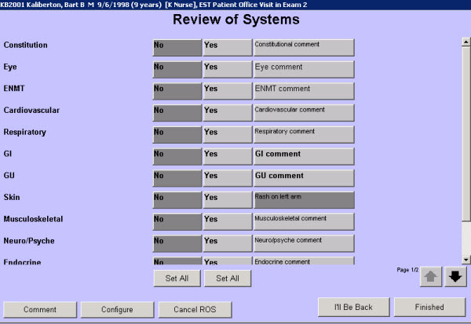

|
In this solution...
- Purpose
- Before You Begin
- Steps
- Want to Learn More?
- Related Solutions
- Related Education Opportunities
Purpose
You can modify the child observations that make up a Yes/No history by removing, adding, or changing the constituent child observations. Remember that each row (question) on a Yes/No history is configured as a simple child observation.
The Yes/No format is commonly used for Review of Systems (ROS) and for observations such as Child Development and Anticipatory Guidance. An example of a Yes/No format screen is shown below.

Before You Begin
The child observations that are included in a Yes/No history can have a maximum of four results:
- Up to 4 performs (perform results are either selected or not selected)
- 1 perform & 3 comment (comment results allow the user to enter text)
- 2 perform & 2 comments (this is the traditional Yes/No plus a Comment or two)
Important: The order in which you enter the results while configuring does matter. The results will appear in the order they were entered
|